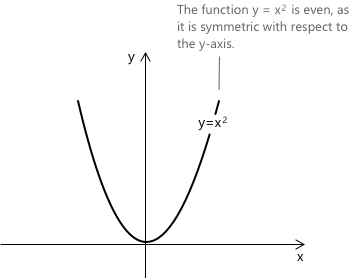
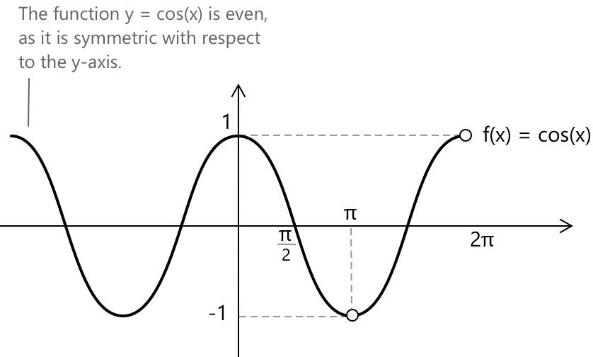
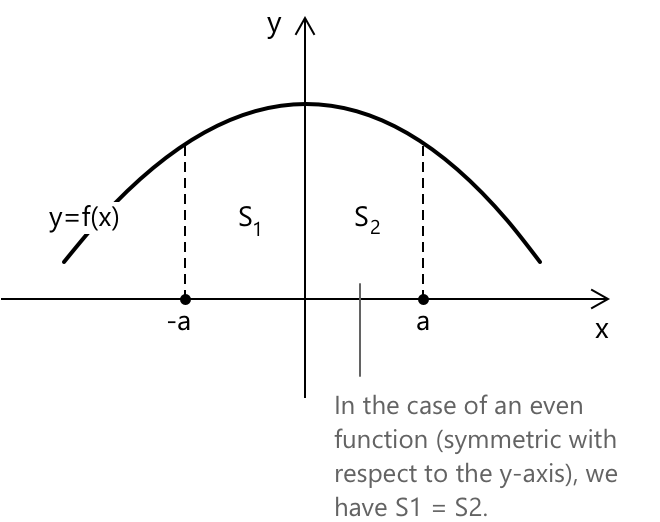
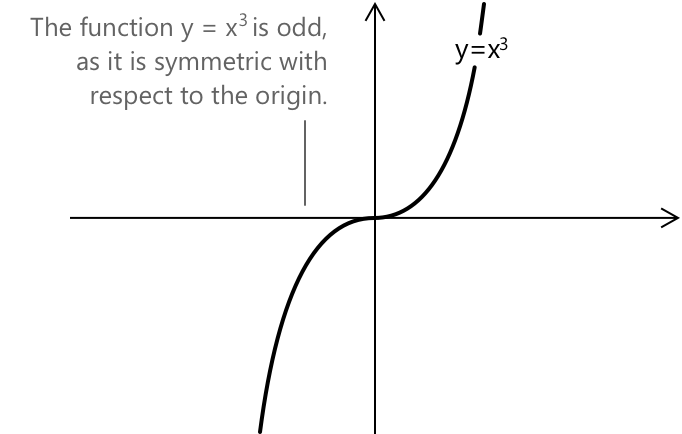
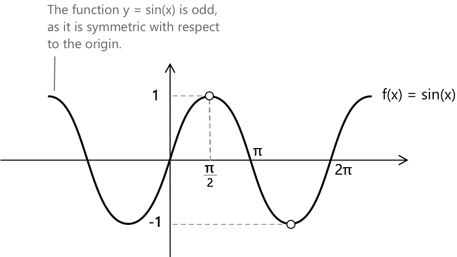
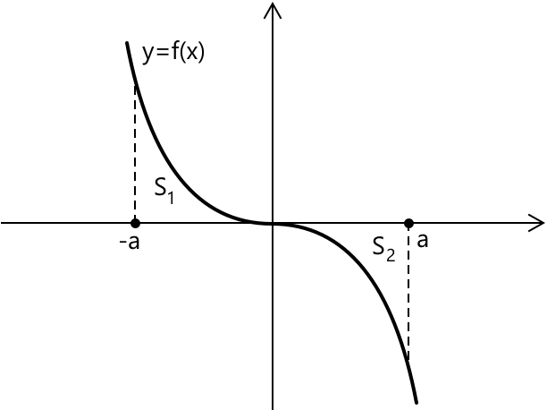

Парні та непарні функції
Поведінка функції
При аналізі поведінки функції корисно дослідити, чи виявляє функція симетрію відносно координатних осей. У цьому контексті функції можуть бути класифіковані як парні, що мають симетрію відносно \(y\)-осі, або непарні, що мають симетрію відносно початку координат. Загалом, функція може бути:
- парною
- непарною
- ні парною, ні непарною
Парна функція
Більш конкретно, припустимо, що ми маємо функцію \( f(x): \mathbb{R} \rightarrow \mathbb{R} \), і нехай \( D \subseteq \mathbb{R} \) буде її областю визначення. Функція \( f \) називається парною, якщо виконується наступна умова:
\[ f(x) = f(-x) \quad \text{для всіх } x \in D \]

Як показано на рисунку, функція \( f(x) = x^2 \) є параболою, симетричною відносно \(y\)-осі. Загалом, функції вигляду \( f(x) = x^4 \), \( x^6 \), або більш загально \( x^{2n} \), де показник степеня є парним, є прикладами парних функцій.

Іншим прикладом парної функції є функція косинуса. Це періодична функція з періодом \( 2\pi \), і її графік симетричний відносно \(y\)-осі. Фактично, легко перевірити, що: \[ \cos(\pi) = \cos(-\pi) = -1 \]
Ще однією парною функцією є функція модуля.
Більш загально, розглядаючи сімейство функцій вигляду \(f(x) = x^{n}\) з \(n \in \mathbb{N},\) парність функції повністю визначається показником степеня: функція поводиться як парна функція, коли \(n\) є парним цілим числом, тоді як вона поводиться як непарна функція, коли \(n\) є непарним.
Визначений інтеграл парної функції
Одним із корисних наслідків того, що функція є парною, є спрощення, яке це дозволяє у визначених інтегралах на симетричних проміжках. Якщо \( f(x) \) є неперервною та парною функцією, то її графік симетричний відносно \(y\)-осі.
Ця симетрія безпосередньо впливає на те, як ми обчислюємо визначені інтеграли на проміжках вигляду \([ -a, a ]\). Зокрема, виконується наступна тотожність:
\[ \int_{-a}^{a} f(x),dx = 2\int_0^a f(x),dx \]

Тобто, загальна площа під кривою від \(-a\) до \(a\) становить просто двічі площу від 0 до (a). Це працює тому, що частина графіка на від'ємній стороні \(x\)-осі є дзеркальним відображенням позитивної сторони і дає таке саме значення інтеграла.
Непарна функція
Припустимо, що ми маємо функцію \( f(x): \mathbb{R} \rightarrow \mathbb{R} \), і нехай \( D \subseteq \mathbb{R} \) буде її областю визначення. Функція \( f \) називається непарною, якщо виконується наступна умова:
\[ f(-x) = -f(x) \quad \text{для всіх } x \in D \]

Як показано на рисунку, функція \( f(x) = x^3 \) симетрична відносно початку координат. Функції вигляду \( f(x) = x^3 \), \( x^5 \), або загальніше \( x^{2n+1} \), де показник степеня є непарним, є прикладами непарних функцій.

Іншим прикладом непарної функції є функція синус. Вона є періодичною функцією з періодом \( 2\pi \), і її графік симетричний відносно початку координат. Власне, легко перевірити, що:
\[
\sin(-\pi) = -\sin(\pi) = 0
\]
Визначений інтеграл непарної функції
У випадку непарної функції площа на проміжку \( [-a, 0] \) рівна за величиною, але протилежна за знаком площі на проміжку \( [0, a] \). Отже, визначений інтеграл дорівнює:
\[ \int_{-a}^{a} f(x) \, dx = 0 \]

В обох ситуаціях площа, обмежена графіком \( f(x) \) та \( x \)-віссю на проміжку \( [-a, a] \), задається як:
\[ S = \int_{0}^{a} |f(x)| \, dx \]
Єдина функція, яка є одночасно парною та непарною
Функція \( f(x) = 0 \) є єдиною функцією, яка є одночасно парною та непарною, оскільки вона задовольняє як \( f(-x) = f(x) \), так і \( f(-x) = -f(x) \) для всіх \( x \in \mathbb{R} \). Власне, якби функція була одночасно парною та непарною, ми б мали:
- \(f(-x) = f(x)\), коли функція парна.
- \(f(-x) = -f(x)\), коли функція непарна.
Таким чином, нульова функція є єдиним випадком, що задовольняє обидві властивості.
Властивості
- Сума двох парних функцій є парною.
- Добуток парної функції на сталу є парною функцією.
- Добуток двох парних функцій є парною функцією.
- Похідна парної функції є непарною функцією.
- Сума двох непарних функцій є непарною.
- Добуток непарної функції на сталу є непарною функцією.
- Добуток двох непарних функцій є парною функцією.
- Похідна непарної функції є парною функцією.
- Добуток парної та непарної функцій є непарною функцією.